Средства рецензирования
Для совместной работы над документами в Word 2010 используется вкладка «Рецензирование». На ней мы используем две основные возможности: исправления и примечания.
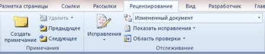
Рисунок 1 – Исправления и примечания на вкладке «Рецензирование»
Примечания используются для комментариев к тексту. Если редактор видит многократно повторяющуюся ошибку, он оставляет примечание с просьбой исправить ее везде. В примечаниях также предлагаются альтернативные варианты фраз, рекомендуемые редактором. Кроме того, в примечаниях мы иногда просим подробнее осветить какой-либо аспект, чтобы сделать статью интереснее, или сократить текст, чтобы упростить его понимание.
Исправления служат для внесения изменений в статью. Мы используем механизм отслеживания исправлений, поэтому автор может видеть свой вариант отредактированного фрагмента текста наряду с редакторской правкой. Как правило, внесенное исправление означает, что редактор настоятельно рекомендует автору его принять. При этом возможность отклонить исправление, конечно, сохраняется. Правку текста мы, в основном, используем для исправления очевидных ошибок - грамматических и стилистических (например, перефразирования неудачно построенных или длинных предложений). Нередки также исправления, улучшающие восприятие текста, такие как замена длинного перечисления однотипных пунктов на маркерный список.
Рецензирование глазами редактора
Давайте посмотрим, как эти возможности работают на практике, когда документ попадает в надежные руки редактора.
Примечания
С примечаниями все очень просто. Нужно выделить текст, нажать кнопку «Создать примечание» и добавить свой комментарий.
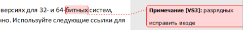
Рисунок 2 – Примечание к тексту
Примечания располагаются в выносках, которые по умолчанию размещены на правом поле документа. Каждое примечание автоматически подписывается инициалами пользователя, который его оставил. Все эти параметры можно изменить, и об этом пойдет речь чуть ниже.
Исправления
На первый взгляд, в группе «Отслеживание» всего четыре кнопки. Но каждая из них открывает список с дополнительными возможностями.
Рисунок 3 – Отслеживание изменений и параметры исправлений
Отслеживание исправлений включается нажатием на кнопку «Исправления», которая сразу приобретает золотистый цвет, тем самым сигнализируя о включенном режиме. В нем Word 2010 запоминает все вставки и удаления, а также изменения в форматировании документа. Если нажать нижнюю часть кнопки, откроется дополнительное меню, первый пункт которого включает или отключает отслеживание.
Щелкнув кнопку «Параметры исправлений», вы можете настроить вид ваших правок – цвета, типы линий, разметку документа. Здесь же настраивается и расположение примечаний – вы можете поместить в их левом поле документа и задать ширину выносок, а также отключить отображение линий, которые связывают их с текстом.
Все исправления связываются с именем пользователя, которое задается в личных настройках Word 2010. Кнопка «Сменить пользователя» ведет именно к ним.
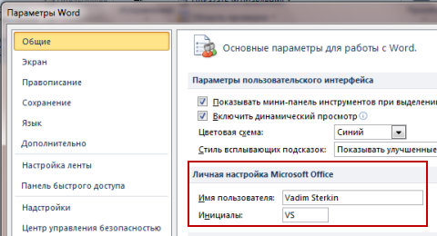
Рисунок 4 – Личные параметры пользователя
В примечаниях, как вы уже видели, используются инициалы, а в удалениях и вставках указывается полное имя.
Когда в документе много исправлений, воспринимать его становится намного труднее, поскольку по умолчанию отображается как оригинальный текст, так и исправленный.
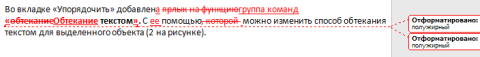
Рисунок 5 – Исправленный текст по умолчанию выделяется красным цветом
Намного приятнее глазу редактора была бы конечная версия, не правда ли? И такая возможность имеется. Для облегчения восприятия в Word 2010 предусмотрено четыре режима.
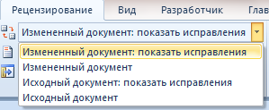
Рисунок 6 – Режимы отображения исправленного документа
Чтобы не потеряться в правках, редактор включает режим «Измененный документ». При этом сразу перестают отображаться все индикаторы исправлений текста и выноски. Если редактор, устав от многочисленных исправлений, все-таки запутался, он всегда может переключиться в режим «Исходный документ» и увидеть, что там было написано изначально.
Помимо режима документа, можно гибко настроить отображение исправлений в выносках. Кнопка «Показать исправления» открывает список всех возможных исправлений, которые Word 2010 отображает по умолчанию.
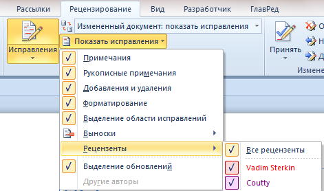
Рисунок 7 – Настройка отображения исправлений и примечаний
Например, я часто отключаю отображение исправлений (форматирование, а также добавления и удаления), но оставляю примечания. Обратите внимание, что можно легко выбрать правки и комментарии только определенного рецензента.
Еще одним элементом группы «Отслеживание» является кнопка «Область проверки». Она, как и в случае с кнопкой «Исправления», обретает золотистый цвет при включении области, хотя не заметить ее трудно. Ее удобно использовать в сочетании с режимами отображения документа и исправлений.
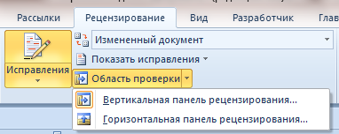
Рисунок 8 – Область проверки можно отобразить слева или внизу
Например, на рисунке 8 видно, что выбран режим «Измененный документ». В нем исправления и примечания не отображаются в выносках. Однако при добавлении примечания автоматически открывается область проверки, в которой видны все правки в соответствии с параметрами, заданными кнопкой «Показать исправления». Я отключил отображение исправлений в форматировании, поэтому отображаются только примечания, удаления и вставки.
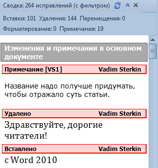
Рисунок 9 – Область проверки со сводкой исправлений. Чтобы изменить ее масштаб, нажмите <CTRL> и покрутите колесо мыши.
Из сводки видно общее количество исправлений, однако обратите внимание, что подсчет ведется «с фильтром». Это напоминает мне о том, что какие-то исправления не отображаются. Поскольку случаев форматирования не зафиксировано, я могу догадаться, что они отключены, не нажимая кнопку «Показать исправления». Полезную площадь области просмотра можно увеличить, скрыв статистику с помощью кнопки со стрелками в правом верхнем углу.
На мой взгляд, сводка стала бы удобнее, если бы прямо в ней можно было скрывать или отображать различные исправления, обходясь без кнопки «Показать исправления» на ленте. Однако отображение вставок и удалений объединено, поэтому интерфейс получился бы нетривиальным.
На этом рассказ о возможностях рецензирования глазами редактора можно закончить. У рецензента достаточно средств, чтобы исправить документ и донести до автора пожелания по его содержанию и оформлению. Теперь давайте посмотрим, что будет делать автор, когда получит рецензию на свою статью.
Рецензирование глазами автора
Открыв документ с редакторскими правками и примечаниями, автор может испытать широкую гамму чувств – от глубокого удовлетворения до полного шока. Отчасти это зависит от придирчивости редактора, но в большей степени – от качества исходной статьи, присланной автором. Если она была не очень удачной, в каждом абзаце картина может быть такой, как на рисунке 10.
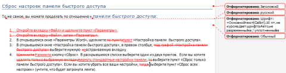
Рисунок 10 – Фрагмент документа с многочисленными правками
Чтобы быстро довести материал до ума, автор должен принять два постулата. Во-первых, редактор является конечной инстанцией, поэтому спорить с ним из-за каждой правки не имеет смысла (хотя свое мнение нужно уметь отстаивать). Во-вторых, редактор не будет тратить время на внесение правок, если они не улучшают статью. Ведь одно из золотых правил рецензирования – это вносить только те изменения, которые делают материал лучше.
Далее я рассмотрю, как быстро интегрировать в документ все редакторские правки и примечания.
Оценка объема работы и выбор режима для отображения документа
Когда редакторских правок мало, от автора требуются минимальные усилия, поэтому порядок действий особого значения не имеет. Если же правок много, документ выглядит совершенно нечитаемым. Но не надо отчаиваться. В первую очередь нужно оценить объем работы, т.е. определить, сколько изменений внес в документ редактор. В этом поможет область проверки.
В сводке (рис. 9 выше) видно, что в документ внесено множество исправлений, а также добавлено 19 примечаний. В этом случае лучше отобразить документ таким, как его видел редактор.
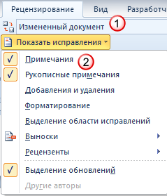
Рисунок 11 – Отображение измененного документа только с примечаниями
Вместо представления «Измененный документ» можно использовать «Измененный документ: показать исправления» - тогда все исправления и примечания будут отображаться в виде выносок. Именно с примечаний, в которых редактор выражает пожелания к документу, и нужно начинать работу, а исправления можно оставить на десерт.
Примечания
С каждым примечанием придется разбираться по отдельности. Проще всего использовать навигацию по примечаниям, убив тем самым двух зайцев.
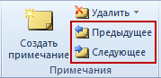
Рисунок 12 – Навигация по примечаниям
Во-первых, ускоряется перемещение по документу, а во-вторых значительно снижается вероятность пропустить важное примечание. Отмечу, что навигацию можно переходить от примечания к примечанию с помощью нового поиска Office 2010, но о нем будет отдельный рассказ.
Когда примечание касается доработки статьи, с ним можно согласиться и внести в документ необходимые изменения, либо не согласиться и объяснить свою позицию. Нередко на примечание редактора имеет смысл ответить, чтобы при просмотре следующей ревизии документа было понятно, что сделал автор. Для этого достаточно щелкнуть на примечании, а затем нажать кнопку «Создать примечание» на панели. В этом случае Microsoft Word четко обозначает связь между примечаниями.
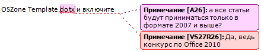
Рисунок 13 – Ответ на примечание
Как видно на рисунке 13, оба примечания ведут к одному выделенному фрагменту текста. Кроме того, VS 27R 26 в ответном примечании означает: «Примечание 27 оставил VS в ответ на примечание 26 от A» (R – означает reply, т.е. ответ).
Не требующие ответа комментарии можно удалить, используя соответствующий пункт в контекстном меню примечания или расположенную на ленте кнопку «Удалить» (рис. 12), с помощью которой можно удалить все примечания сразу. Закончив с примечаниями, можно переходить к исправлениям.
Исправления
Исправления бывают двух типов:
Работа с изменениями в тексте статьи ведется по аналогии с примечаниями – можно осуществлять навигацию от одного исправления к другому. Отличие лишь в том, что исправления можно принимать и отклонять.
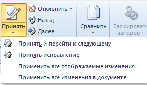
Рисунок 14 – Исправления можно принимать и отклонять, а также перемещаться от одного к другому
Кнопки «Принять» и «Отклонить» делают чуть больше, чем уместилось в их краткие названия. После совершения действия они автоматически перемещают вас к следующему примечанию, что очень удобно. В контекстном меню примечания такой возможности, впрочем, нет.
Чтобы упростить работу и разгрузить документ, изменения в форматировании можно смело доверить редактору. Достаточно включить только их отображение кнопкой «Показать исправления» (рис. 11), а затем щелкнуть нижнюю часть кнопки «Принять» и применить все отображаемые изменения (рис. 14). Как видите, возможность настроить отображение исправлений обретает дополнительный смысл.
Теперь, вернув удаления и исправления, можно быстрее перемещаться по ним вверх и вниз по документу. Если нужно быстро сопоставить исправленный текст с оригиналом, можно переключиться в режим «Исходный документ». Вовсе необязательно принимать исправления по одному. Проще просмотреть их и отклонить те, с которыми вы не согласны, а затем принять сразу все оставшиеся (рис. 14).
Заключение
Завершая эту статью, хочу подчеркнуть, что рецензирование – это вовсе не противостояние автора и редактора, а средство совместной работой над документом. При этом статья улучшается, а в выигрыше остаются обе стороны. Внимательно читая статью, редактор вольно или невольно расширяет свой кругозор. И даже если немедленного практического применения этим знаниям не происходит, информация запоминается, и при необходимости к статье всегда можно вернуться. Для начинающих авторов хорошая рецензия очень ценна, поскольку открывает глаза на различные недостатки своего письма, будь то структура статьи или стиль изложения. Да и опытный автор никогда не откажется от возможности посмотреть на свою работу глазами грамотного рецензента.
Итак, все замечания учтены, а исправления приняты. Статья готова? Не торопитесь, а лучше проверьте правописание. После многочисленных исправлений могут возникнуть накладки, да и лишний раз убедиться в грамотности текста не повредит. О проверке правописания пойдет речь в следующей статье.